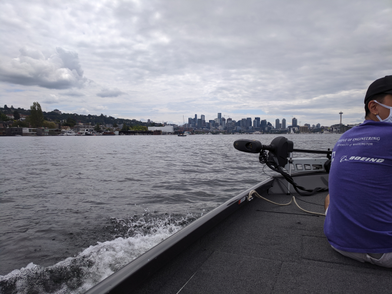
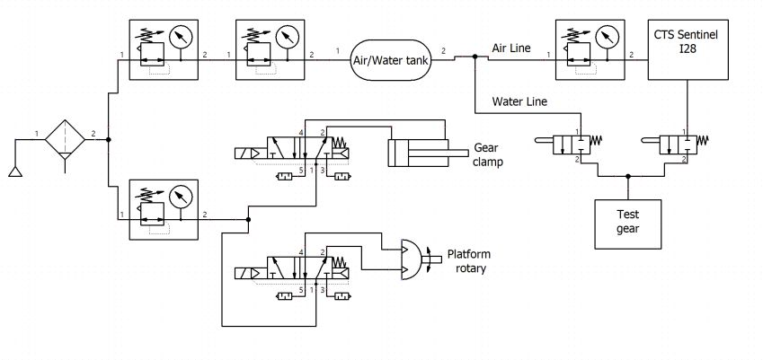
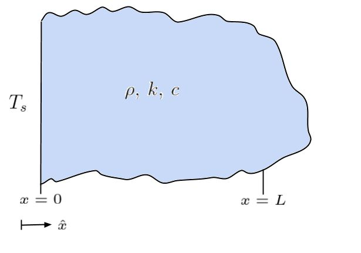
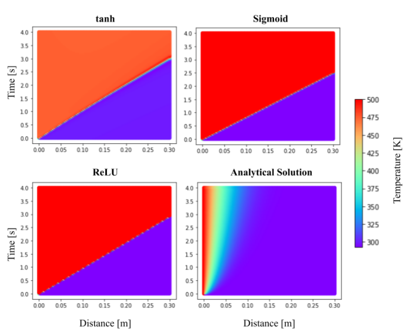

Pure Watercraft
I got the opportunity to intern with Pure Watercraft during my 2020 summer break as a mechatronics and test engineer. I learned a ton about throwing together electronics and hardware as well as putting together pieces of software and programs.
One of the first projects I got was to make a data aquisition unit for a pressure transducer mounted on the updated gearbox in the new model of the outboard. The updated model and gearbox had a few possible valve configurations for the lubricant and we wanted to analyze which would be best both for normal use and shipping. The unit itself is pretty simple and just consists of a load cell amplifier, analog to digital converter, and a microcontroller to handle sending messages over CAN Bus.
I also made a little fixture to mechanically test the throttle assembly by repeatedly smashing some of the buttons, actuating and moving the lever arm about the throttle's neutral detent, and by rotating the arm back and forth.
I had some fun making a simple gripper that conforms to the base of the lever using some spring loaded fingers. They're angled in such a way to cam within their slots when they're pushed on by the lever arm, but they're still easy to move by hand.
It's a neat little system, it also logs all of its force (from the button actuations) and torque (from the radial test) to an onboard SD card and can be configured on the fly for the type of test to be ran and some of the test parameters.
I also got to help build up a piece of production equipment centered around testing, calibrating, and programming the BMS PCBs. I designed and made a bed of nails to sandwich the boards onto some spring loaded contacts and to completely isolate the user from the board. Given that there would be 400V going to the board during calibration and testing, there are toggle clamps and an integrated limit switch to ensure the test can't run while the operator is potentially exposed to high voltage. I also took a stab at writing some code to control the onboard power supply but the actual software engineer came back from vacation before I could finish it (it was originally his project).
I did a lot of little jobs for some of the other engineers as well, to include some machining as well as rewiring this hoist that will hopefully be used in production.

One of the fun parts of the internship was actually getting to use the system we were trying to bring to market. I got to go out on some of the nearby lakes to break test out changes to the system, which were mainly firmware and hardware updates to the battery and outboard.
There are a lot of components of the system that require leak testing since we're basically throwing a massive battery pack into a lake. The process for actually conducting the testing was not well optimized when I got there so I attempted to automate it. The unit I put together worked in conjunction with an older CTS C28 to allow the operator to enter in a part number and start a preprogrammed test. The logger would then track all of the data spat out by the CTS's transducer (mainly in an attempt to provide some feedback on our initial test parameters), log all of this data along with whether the part passed or failed, and then automatically upload it to out server. Unfortunately I left before I could connect it to the server but the rest of it worked well.
The boards for controlling the battery also required a testing and programming enclosure that was completely closed in to prevent electrocution of the user. This turned out to be a simple box with some integrated cabling/mounts, a limit switch, and a latch. The interesting part is that it had to be printed in 8 pieces.
Finally and perhaps most importantly, I got to meet a lot of dogs while I was in Seattle (I only got pictures of two, but trust me there were lots more).
BD Medical Automated Bag Tester
The first portion of my internship at BD Medical consisted of testing a lot of small reservoir bags for their new wearable insulin delivery device. The whole process of testing these bags was time consuming and inefficient, so in the 50 seconds between each test I slowly designed a robotic arm and fixture to automate the testing.
After doing some testing and revisions of the structural components, I arrived at the design shown to the right and below. It has two lead screws to drive the lift and tray, a rack and pinion for the arm, and two air cylinders for clamping and advancing the bag into the CTS instrument for pressure decay leak testing. I also put together the control/power circuitry and programmed it with an Arduino.
After completing the project I put together a report and further designs for a faster and more flexible tester for their operations team to follow up on. I completely failed to take into account how underpowered my motors were when I ordered them (I did some back of the napkin calculations for a rough size but didn't account for how much friction there would be in the system). I also chose to actuate the whole thing with stepper motors and lead screws, even though it would have been 100x faster and more precise to slap in some simple pnuematic cylinders, all because I did not clarify with my boss what my budget actually was for the project (and a cheap stepper + threaded rod is 10x less expensive than a decent pnuematic cylinder).
Musashi Auto Parts: Rolling Machine Shop
The floor of Musashi Auto Parts-MI is fairly large, and so whenever a new machine or production line is put in it’s a pain since all of the tools and equipment are housed on the opposite end of the plant from the new lines. Hence, I was tasked with making a cart that contained all of the goodies that might be needed in machine installation.
I helped design the cart and presented the concept to the other engineers in the department with a fellow intern (Joanna Robinson). Another intern (Michael Campbell) helped me with welding the frame while I made more of the pieces/components. Aside from that I fabricated, machined, welded, and wired the rest of the cart. It should save the engineers doing the line installations tens of hours per week collectively just by having all of the equipment and parts in one place. The cart had a bunch of fanciful features, including a fold-out work surface, extension ports, overhead lights, a drill press, a vice, and a grinder.
The plan was to also have the sides and center of the cart filled with electronically locked tool boxes. Unfortunately, the lead time on these tool boxes meant that I could not finish the project in time to go back to school. The touch pad on the center post of the cart was supposed to control power to all of the machines and the locks on all of the tool storage locations so that none of the more curious line workers would get curious and lose a finger or walk off with a new angle grinder.
The cart itself is an absolute unit, designed and handmade (mostly) by yours truly. The top work surface is a half inch thick slab of AR500 plate topped off with a layer of stainless steel sheet. The rest of the cart is all steel tubing and sheet metal thick enough to make an industrial sheet metal brake cry a little.
I've personally accidentally dropped it from a crane only to break the already battle hardened floor while trying to paint the underside. The electronics for the project where pretty simple (just a PLC and a handful of relays), but I still got to learn a lot about industrial electronics and wiring.
Musashi Auto Parts: Gear Subassembly Leak Testing
The Musashi Auto Parts (MAP) plant in Battle Creek, MI, manufactures components for and assembles automotive differentials. It was super cool since the side gears for the differentials were made in house. Giant lengths of steel billet and the actual housings went in one door and out of the other came finished differentials.
The problem that MAP had was that its side gears were leaking. They are fitted with a cap before assembly that's supposed to ensure that differential fluid does not leak out of the assembly. But a handful would leak anyway, so they needed a means of testing them in production. Ergo, my summer project.
With the supervision of one of the lead engineers I made an apparatus that would allow me to take factory air, stabilize it to some degree, run it through a machine to measure its flow rate, and lead all of that to a clamp that would seal the gear and flow analyzer together. The setup also allowed me to fill the gears up with pressurized water for a fluid loss test.
The data I collected was sent to various engineering and company leads and used in assigning a new leak rate test for the gears so that the company would not output as many leaking gear assemblies/differentials.
Physics-Informed Neural Networks for Thermal Modeling
As part of the Impact and Crashworthiness Lab at MIT I did some research into using physics-informed neural networks (PINNs) to model lithium-ion batteries and packs undergoing internal short circuit(s). The original plan was to scale up individual thermal and electro-chemical models, merge them at the layer level, and then scale up the entire combined model until I could predict entire pack performance. Unfortunately I only had time get a layer level thermal model working, though I got to learn a lot about batteries as well as machine learning. I also wrote my Bachelor's thesis on my results.
I started off with a 1D unsteady heat transfer model on a semi-infinite slab of material. The results for such are fairly simple and easy to verify against.
I tried manipulating a handful of network/model parameters to get the output closer to the analytical solution. Above is the sorry results after trying a few different activation functions.
After screwing around for a while, I figured out that I could attenuate portions of the output via their loss functions. Much of the previous results showed no real gradient and drastically overestimated temperatures, so I tried weighting the overall PDE loss more and the x=0 boundary condition loss (BC0) less. The network output quickly approached the analytical model.
My next step was to make a 2D model, so I just took another semi-infinite slab with a convective heat transfer boundary condition on the top side.
I setup a parallel model in COMSOL for comparison and the results looked less than stellar. It did not appear that I could fudge the loss weights enough to coerce the network output to converge onto the COMSOL model.
Regardless of the lack of success with the 2D isotropic model, I still went ahead and made a 2D anisotropic model. The model was meant to be the final step before being able to make a thermal model of an entire battery, so I made the dimensions and characteristics close to those in an actual battery.
The results of the 2D anisotropic model look much more promising than for the isotropic one. With some finer tuning it appears that the network output should converge onto the COMSOL model. For my next step I planned to make a layer level electro-chemical model and combine/couple it with the thermal model, but I ran out of time before graduating.
2.013: Engineering Systems Design
For my senior capstone I was a part of a team of 27 students tasked with designing a new unmanned underwater vehicle (UUV). The system requirements are shown below, but the main premise was to make an easy to deploy submarine that could operate autonomously in the water for up to 30 days continuously, all while maintaining a price point of under $50k (a previous iteration of the class had designed a short range UUV, RAPID, for this price the previous year).
I was the lead for the structures subteam, responsible for designing the hull and packaging/assembly of the interior components. After a couple of months of researching, designing, and reviewing, we came up with the Long Endurance 1000m-rated Deep Ocean Underwater Glider, affectionately Dubbed DOUG LE-1000.
The overall design is fairly complicated and you can read more about it in our hastily written white paper . It includes a main buoyancy engine, and smaller trimming engine, a propeller, and glider wings to suit a variety of movement functionalities and use cases. To meet the 30 day continuous mission time while still maintaining a light and slim overall profile we looked into using aluminum as our principle fuel source. As it turns out aluminum reacts with water to produce hydrogen, though normally the oxide layer inhibits this. If you alloy it with some gallium and other metals it reacts much more readily though. The hydrogen produced goes to inflating the main buoyancy engine in the front of the vehicle, and once the vessel rises to the surface it's used by a PEM cell to recharge a small pack of batteries. There's also a collapsable snorkel to raise an antenna for iridium communications, GPS, and air line. There's also some pretty innovative navigation, communications, and automated swarming tech built into it.
To increase the its buckling capacity and to provide a mounting surface for the internal component rack we designed the hull with a number of ribs throughout. And to allow for the vehicle to maneuver we slapped the battery pack on a set of rails so the center of mass could be translated and rotated within the hull.
The wingspan is about 6 feet, with a 10 foot length and 8 inch outer diameter. It also only weighs about 175 pounds, and the wings are easily removable for either replacement or for ease of transporation/storage/deployment. This tighter packaging was sought to eliminate the large overhead involved with deploying and recovering large vessels. The usable inner diameter of the hull is cut down to between 5.5-6.5 inches with the ribbing and rails.
As subteam lead I mainly coordinated between other subteams to make sure overall requirements were met and the vehicle still theoretically functioned. I also got to fill in various areas such as designing out the battery holder and shifter above, though it was fairly simple.

To make room in the fairings for the bladder, snorkel, and propeller components we made the end caps an inverted hemisphere, which still distributes the load well enough to reduce sharp stress concentrations at the ends. They also look a little like swiss cheese due to all of the inlet and outlet ports going to the sensor package and the buoyancy engine/fuel tank.
I did some work for the Drip Irrigation portion of MIT's Global Engineering and Research Lab that involved making an Android app for their product. I'll have more info on it once I stop procrastinating have time.
MIT Solar Electric Vehicle Team: Nimbus
MIT’s SEVT is a student ran organization dedicated to designing and building solar powered cars from the ground up to compete in 1,500+ mile endurance races. Our car in 2019-2020 (Nimbus) was an asymmetric catamaran style as that form factor lends itself for better aerodynamics given its reduced frontal area.
I did a lot of work in designing the parking brake (to the left), which is basically just putting a lever arm and a locking/release mechanism on a hydraulic cylinder. I also worked on redesigning some of the geometry for the rear suspension. Originally we planned (and made) our rear suspension's L-arm out of two pieces of steel to be welded together (picture of half of it below).
After having to actually machine the parts and learning first hand how terribly they were designed (in part by yours truly), I redesigned the connection point between the two parts such that it would suffice to make it from aluminum and to be easier to machine (the joint is pictured above).
As an upperclassman on the team, I helped teach a lot of new members and underclassmen the basics of machining and design, and as the business lead for the team I helped to maintain relations with our sponsors and raised tens of thousands of dollars for the project.
2.671: Measurement and Instrumentation
2.671 at MIT is all about measurement instruments and processing data. A major component of the class is a personal measurement and analysis project over the semester, for which I made a small gas powered cannon.
I wanted to see the effect that the ignition point placement would have on the internal combustion characteristics of my cannon. I made it a simple setup with a rupture disc to contain the pressure until some roughly set release point, and I tested just 3 ignition points at the two ends and middle of the chamber. I purposely made the chamber long and narrow to try and accentuate any effect that the placement would have.
The left most graph shows a sample of the pressure transducer's output over time, the middle the mean times to reach peak chamber pressure, and the right a quadratic fit of the data. I hypothesized that the fastest peak pressure time would be seen at the centroid of the chamber since there would be two flame fronts propagating an equal, minimized distance if they originated at this point. It's interesting to note that the mean peak pressure time was NOT in the centroid of the chamber but actually shifted from it, possibly indicating some more significant reliance on the chamber's morphology than simply finding its centroid (i.e. that the bend/elbow in the chamber affected the flame propagation speed).
I also took peak pressure but didn't wind up using it since the wait periods for the chamber to achieve a homogeneous enough mixture for combustion varied significantly for the end sparkplug position (screwing up my pressure readings somewhat). I took the muzzle velocity too but didn't use it since it appeared to be corrupted by a lack of light in the test environment (it works through reading light changes) and/or by pieces of the rupture disc flying through it. The really interesting result from this is that I didn't receive a visit from the authorities while firing off a cannon >30 times in the middle of Boston.
MIT's 2.810 (Manufacturing Systems and Processes) has a lab/competition component where teams design and build a set of 6 RC cars. Since we were Team A, we became the A Team.
I'm not sure where this image came from, but we were dead set on achieving this look for our final cars. As part of the project, we got to make custom 3D printed positive molds to thermoform our cars' shells.
It took a lot of iterating on the temperature and material selection before we got a shell that consistently worked. It's hilariously simple mechanically, where the front hinge is just a piece of bent plastic.
During the actual race component of the course we happened to strip a lot of our gears (we definitely didn't design the power train to be very robust), but until that point we were contenders for first place. The control box containing the battery, reciever, and steering servo was also made to be easily swapped between cars (since we had to swap out cars every lap).
MIT 2.007: Moonshot
2.007 is the MIT class with complementary robotics competition that spawned FIRST Robotics. The 2019 competition, Moonshot, mainly involved traveling down a series of ramps, picking up rocks, and getting back up to the starting position (along with some other possible scoring objectives along the way).
My robot was designed to get down the ramp, pick up a handful of rocks in a bin, and then lift up that bin and shoot it out into the starting area for the points. It was also made to pull a multiplier (a 6lb weight). I learned a ton about design throughout the class while iterating and testing different ideas and concepts for the bot.
I'll admit, I got pretty ambitious with how many of the scoring elements I wanted to take a crack at. I quickly realized that if I wanted to get a faster robot I had to give my drive train at least half of my motors. That only left me three motors to yank a 6lb weight, collect a bunch of rocks, and raise them up a few feet (and all in under two minutes or so). My solution? I made a transmission with the remainder of my motors (first one with 2, then upgraded to 3). It was pnuematically actuated, included some handmade dog gears, and was strong enough to take a finger.
I also needed a means of collecting rocks that didn't require additional motors, so laser cut this little ratchet assembly and tied my drive train to the collector. The ratchet was so that the collector would only operate when I was driving forward and not fling the rocks back out when I went backwards.
I also had a few cracks at making a proper chassis. The first attempt I failed to take into account the fact that thin sheet aluminum distorts really easily when bent, rendering it completely dimensionally inaccurate. I finally landed on a good 3 part chassis, a few iterations in.
All in all, this robot didn't actually come together by competition day. I got very ambitious and tried to do a lot of different relatively complicated things rather than just focusing on moving rocks from point A to point B. But I still got to learn a lot about design and manufacturing, and had a lot of fun building this.
Metal Melting and Casting
For a while I have been messing around with metal casting. I had made a furnace that ran off propane but it was somewhat fragile and the cost of propane was getting to be too much for my budget. After that I started playing around with oil burners and resistance furnaces.
The first forge I made was casted using a furnace cement and perlite mixture. Perlite is basically just expanded rock/mineral, so it's a very cheap high temperature insulator. The oven itself cracked pretty easily and was not very robust, though it was very portable (I could load the whole thing + propane in my trunk) and was pretty quick to use. The price of propane was starting to eat my paltry budget though so I started looking for alternatives pretty soon.
In my quest to make a cheaper (propane is not cheap when you have no income) and easier to use (less than 1 hour set up time) furnace, I experimented with resistance forges. I basically stuck an electric stove’s heater with a steel shell into a pile of perlite and contained the whole thing in a cardboard box. It’s honestly amazing that the perlite was a good enough insulator to keep the box from catching on fire, even though the chamber reached somewhere around 1600F
Another energy source I looked into for a while was used motor oil, which, thanks to a well-placed ad on craigslist, I had obtained 50 gallons of. I initially tried dripping the oil into an airstream to atomize it, but I couldn’t get that to work. At some point I tried vaporizing the oil and pressurizing it but that didn’t work at all. After that I tried pressurizing the oil and just combining the oil and air lines in a junction right before the nozzle, which turned out to work for the most part. For the furnace itself I basically dug a hole in the ground and lined it with cinder blocks and bricks that I had lying around. The largest melt I attempted in my makeshift pit was about 10lbs of aluminum, though the entire apparatus supporting the pressurized oil and air rig is very cumbersome.

I have played around with siphon nozzles some, the only problem is that they still require a high volume of compressed air, which limited the mobility of my setup/made the whole thing more cumbersome to setup.
Delavan nozzles are a type of pumped oil nozzle, where the oil is atomized not directly through interaction with pressurized air but by its own centrifugal forces as it's forced through the nozzle. This frees me from having to hook up a large compressed air source, which is pretty nice. The only problem is that the massive amount of oil I obtained came from these amateur stock car racers who slopped in all sorts of additives into an already high viscocity oil. The resulting sludge only managed to clog my poor nozzle.
I have done some sandcasting and 'lost foam casting', but it's generally hard to juggle a camera and liquid aluminum simutaneously. I did take a dive into some investment casting by attempting to replicate this fire extinguisher handle. I wanted a metal version that I could modify to turn the extinguisher into a pressurized fuel cell.
The cast itself was a mild failure given that I didn't cook the investment for long enough to drive all of the water out of it prior to pouring the metal. Believe me when I say it's terrifying to have liquid metal jumping back out of the mold you just poured it into.
I also made this little bronze hand as part of a day trip to one of MIT's foundry and metal working rooms.
Piston Valve Hybrid Cannon
Are you having trouble with your long game? Do you just really need to be able to send a golf ball 550+ yards in a single stroke? Then I have just the thing for you!
The piston valve hybrid cannon was a concept I saw on YouTube a few years ago and always wanted to build. It replaces the rupture disc normally used in ‘hybrid’ cannons with a piston to more finely tune the opening pressure of the chamber. I haven’t actually gotten a chance to mess around with it too much but its theoretical maximum velocity is around 1500ft/s with a standard golf ball.
The piston is pretty simple and works off of a pressure differential between the rear pilot area and the chamber. Since there's a large difference in exposed areas between these two sections, it becomes possible to control the opening of the valve with a much smaller volume and pressure. I alo used this program called HGDT (hybrid gun design tool) to roghly spec out the dimensions of my chamber and barrel and get rough estimates of the muzzle velocity. For an AP physics project I also put together my own model to estimate the muzzle velocity and energy that was pretty close to HGDT's output and could be tuned once I had actual data from my cannon.

The metering system uses the chamber’s pressure to measure how much fuel and air are present and the ignition system is based on a remote switch and a DC step up module.
I also made another hybrid style cannon on a smaller scale that utilized a rupture disc instead of a piston valve. With the disc and butane/air mix a fairly precise chamber pressure can be achieved as well as predictable velocities/muzzle energies (with a marble the muzzle velocity tends to top out at around 1800ft/s).
Team Impetus Presents: H2Ouse
Me and my friend James George entered and competed as finalists in the international Conrad Spirit of Innovation Challenge in 2016-2017 with our project “H2Ouse”. H2Ouse (which we couldn’t really figure out how to pronounce, but we made a pretty cool logo for) is a combination greenhouse/mini desalination plant using a fairly novel renewable fuel source. When we looked at areas of the world experiencing water stress we noticed two things: that a majority of these nations bordered some body of salt water and that a significant portion of the water draws for a lot of these countries was going towards agricultural irrigation.
H2Ouse consists of two main parts, the first is a large fermentation tank where people can load organic waste and was meant to provide fuel to the greenhouse portion of H2Ouse, which would use it to desalinate sea water for plant irrigation. The actual presentation we gave was performed in front of a panel of professional judges and a crowd of overachieving students from all over the world and was broadcast on TV. This by far was the most terrifying thing I had done up until that point, but it was still pretty fun.
We also made a little demo version for the presentation.
Smaller Projects
Enjoy some of the random things I threw together.
Every man, woman, and man-child should have their own personal flamethrower.
For a mini class on subtractive manufacturing processes, I machined this little toy truck.
MIT has some excellent locales for the dumpster divers out there. After a year of collecting some really terrible sticks of RAM out of ancient computers, I tried my hand at recovering the gold plating from the contact pins. My end capture was pretty pathetic, and I may have accidentally fumigated the room I was working in, but I still have the actual sticks left to ash and process.
I ripped open a camera and removed its internal filters to make it a full spectrum camera. I'm still fudging around with the post processing to make the pictures not look like trash but its getting there.
What do you get when you mix a microwave and a free afternoon?
Me nearly electrocuting myself.
I've taken some dives into furniture making, that said my table was made more to survive a nuclear blast than coffee cups. The rightmost picture is probably the coolest, it turns out that if you saturate a piece of wood with hot steam you can bend it to whatever shape you want!
I have participated in VEX robotics throughout high school with the Battle Creek Area Math and Science Center team, and in 2016-2017 I was the captain. The robot that year consisted of a normal 4 wheel base, a 4 bar lift, and a large claw-type gripper to manipulate and lift game elements. The goal of the game that year was to take these large, oddly shaped stars and squishy cubes and fling them over a fence to the opponents’ side of the mat. I used Inventor to make diagrams and sketches of the robot in an attempt to be able to readily delegate work to other team members.